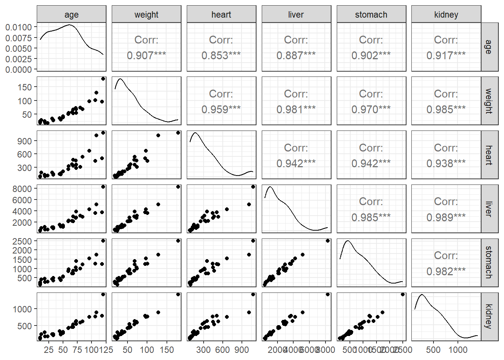
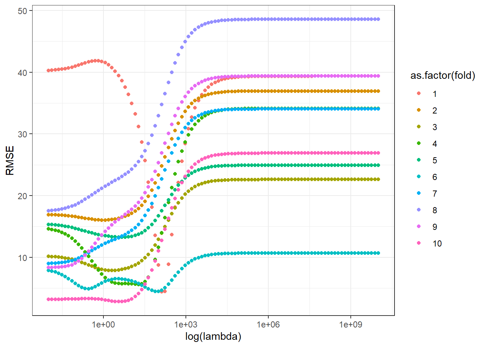
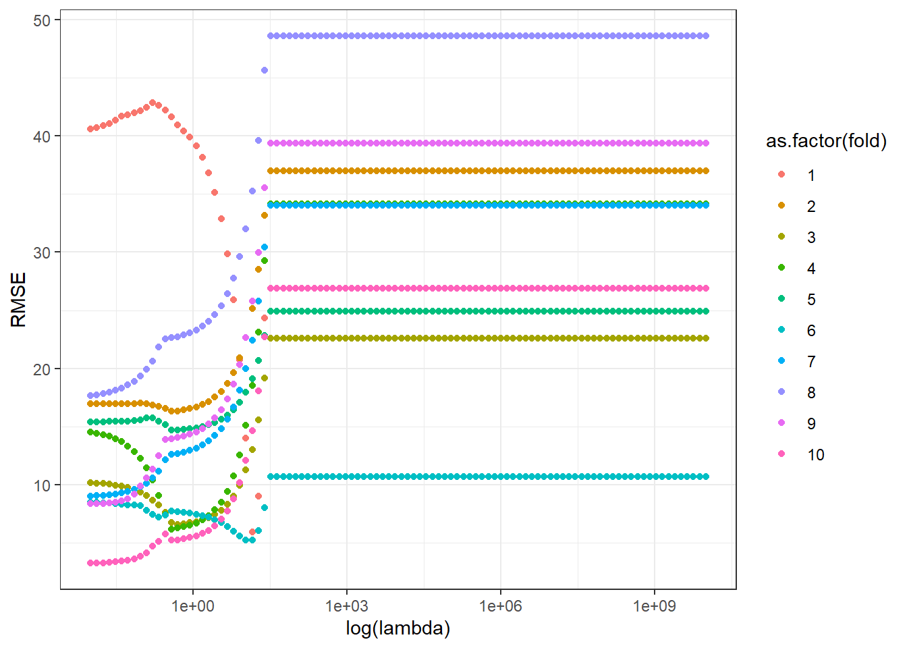
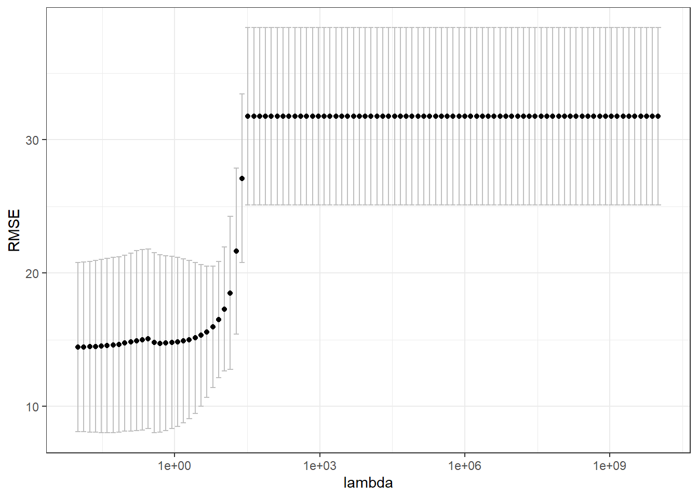
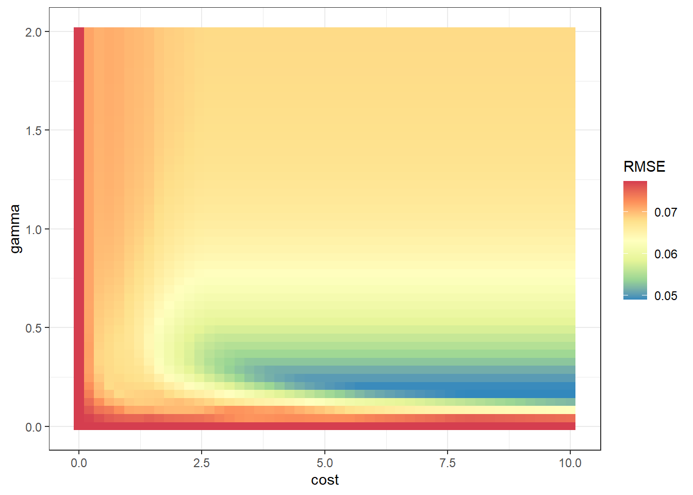

library(gt)
library(dplyr)
library(DAAG)
library(GGally)
library(modelsummary)
library(glmnet)
library(ggplot2)
library(plyr)
library(e1071)
library(rsm)Laboratório 7
Laboratório 7 - Validação cruzada e grid search
Validação cruzada por \(k\)-dobras para seleção do hiperparâmetro de encolhimento em regressão rígida
Dados de medições de massa de órgãos de 30 focas mortas não intencionalmente em consequência da pesca comercial.
Removendo variáveis que tenham valores NA.
dados <- cfseal[colSums(is.na(cfseal))==0]
head(dados) |>
gt()| age | weight | heart | liver | stomach | kidney |
|---|---|---|---|---|---|
| 33 | 27.5 | 127.7 | 855.0 | 338.2 | 215 |
| 10 | 24.3 | 93.2 | 435.4 | 120.4 | 127 |
| 10 | 22.0 | 84.5 | 530.0 | 237.6 | 112 |
| 10 | 18.5 | 85.4 | 542.0 | 193.1 | 139 |
| 12 | 28.0 | 182.0 | 949.0 | 400.0 | 238 |
| 18 | 23.8 | 130.0 | 1100.0 | 443.2 | 293 |
Visualizando correlações aos pares.
ggpairs(dados) + theme_bw()
Estatísticas descritivas distribuições.
datasummary_skim(dados)| Unique | Missing Pct. | Mean | SD | Min | Median | Max | Histogram | |
|---|---|---|---|---|---|---|---|---|
| age | 23 | 0 | 56.2 | 33.0 | 10.0 | 54.5 | 120.0 |  |
| weight | 29 | 0 | 54.8 | 36.7 | 18.0 | 46.2 | 179.0 |  |
| heart | 29 | 0 | 316.1 | 250.1 | 84.5 | 230.0 | 1075.0 |  |
| liver | 30 | 0 | 2211.7 | 1713.2 | 435.4 | 1820.0 | 8309.0 |  |
| stomach | 30 | 0 | 782.0 | 538.9 | 120.4 | 640.0 | 2500.0 |  |
| kidney | 30 | 0 | 440.6 | 285.2 | 112.0 | 373.5 | 1410.0 |  |
Sorteando as dobras (folds) para realizar a validação cruzada.
set.seed(7)
dados_ <- dados
fold <- sample(rep(1:10,3), replace = F)
dados_$fold <- foldVisualizando as observações ordenadas e com cores segundo as dobras ou partições.
dados_ |>
arrange(fold) |>
gt() |>
data_color(
columns = fold,
target_column = everything(),
method = "numeric")| age | weight | heart | liver | stomach | kidney | fold |
|---|---|---|---|---|---|---|
| 46 | 30.3 | 140.0 | 1210.0 | 360.3 | 232 | 1 |
| 68 | 67.5 | 465.0 | 2990.0 | 865.0 | 530 | 1 |
| 120 | 179.0 | 1075.0 | 8309.0 | 2500.0 | 1410 | 1 |
| 12 | 28.0 | 182.0 | 949.0 | 400.0 | 238 | 2 |
| 19 | 18.5 | 98.8 | 627.2 | 265.9 | 181 | 2 |
| 46 | 33.0 | 168.1 | 1195.0 | 384.9 | 249 | 2 |
| 31 | 34.0 | 180.0 | 1040.0 | 425.0 | 245 | 3 |
| 33 | 28.5 | 150.4 | 1047.1 | 476.2 | 248 | 3 |
| 73 | 54.5 | 282.5 | 2795.0 | 919.0 | 541 | 3 |
| 66 | 57.5 | 370.0 | 2195.0 | 720.0 | 450 | 4 |
| 72 | 73.0 | 449.0 | 2715.0 | 1044.0 | 605 | 4 |
| 108 | 128.0 | 1012.0 | 5172.0 | 1734.0 | 888 | 4 |
| 18 | 23.8 | 130.0 | 1100.0 | 443.2 | 293 | 5 |
| 44 | 35.8 | 145.5 | 1525.0 | 475.6 | 332 | 5 |
| 68 | 53.5 | 332.8 | 2124.2 | 730.0 | 457 | 5 |
| 50 | 37.5 | 205.0 | 1099.8 | 543.0 | 274 | 6 |
| 59 | 50.5 | 255.0 | 2115.0 | 850.0 | 415 | 6 |
| 73 | 68.5 | 355.0 | 3875.0 | 1390.0 | 625 | 6 |
| 10 | 18.5 | 85.4 | 542.0 | 193.1 | 139 | 7 |
| 80 | 74.0 | 310.0 | 3130.0 | 985.8 | 585 | 7 |
| 84 | 68.0 | 532.0 | 2937.0 | 1209.0 | 620 | 7 |
| 10 | 22.0 | 84.5 | 530.0 | 237.6 | 112 | 8 |
| 23 | 18.0 | 117.3 | 632.9 | 280.8 | 172 | 8 |
| 118 | 95.0 | 505.0 | 3720.0 | 1245.0 | 785 | 8 |
| 10 | 24.3 | 93.2 | 435.4 | 120.4 | 127 | 9 |
| 50 | 42.0 | 205.0 | 1415.0 | 560.0 | 305 | 9 |
| 106 | 101.0 | 440.0 | 3580.0 | 1260.0 | 760 | 9 |
| 33 | 27.5 | 127.7 | 855.0 | 338.2 | 215 | 10 |
| 60 | 55.0 | 320.9 | 2250.0 | 961.8 | 427 | 10 |
| 96 | 97.0 | 667.0 | 4241.0 | 1542.0 | 757 | 10 |
Separando variáveis independentes e respostas.
X <- data.frame(model.matrix(age ~ ., dados_)[,-1])
y <- data.frame(age = dados_$age,
fold = dados_$fold)Definindo o grid de valores para a constante de encolhimento da regressão rígida.
grid <- 10^seq(10, -2, length = 100)Função de métricas de desempenho dos modelos.
metrics <- function(obs, pred) {
RSE <- sum((obs - pred)^2)
SST <- sum((obs - mean(obs))^2)
R2 <- 1 - RSE/SST
MAE <- mean(abs(obs - pred))
RMSE <- sqrt(mean((obs - pred)^2))
return(
data.frame(RMSE = RMSE,
MAE = MAE,
R2 = R2))
}Loop de validação cruzada via k-fold com grid search para definir o valor ideal da constante de encolhimento.
for (i in 1:10){
rig <- glmnet(x = as.matrix(X |>
filter(fold != i) |>
select(weight, heart,
liver, stomach,
kidney)),
y = (y |>
filter(fold != i))$age,
alpha = 0,
lambda = grid)
assign(paste0("rid.", i), rig)
pred <- predict(rig,
s = grid,
newx = as.matrix(X |> filter(fold == i) |>
select(-fold)))
perf <- rbind(apply(pred, 2, metrics,
obs = (y|> filter(fold == i))$age))
perf <- data.frame(matrix(unlist(perf),
nrow=length(perf),
byrow=TRUE))
colnames(perf) <- c("RMSE","MAE","R2")
perf$grid <- grid
assign(paste0("perf.", i), perf)
# print(p)
}Agregando resultados de desempenho.
perf <-
rbind.fill(list(perf.1,perf.2,perf.3,perf.4,
perf.5,perf.6,perf.7,perf.8,
perf.9,perf.10))
perf$fold <- rep(1:10,each=100)Plotando o RMSE versus a constante de encolhimento para cada dobra ou partição dos dados.
ggplot(perf, aes(x=grid,
y=RMSE,
col=as.factor(fold))) +
geom_point() +
# facet_grid(vars(fold)) +
scale_x_log10() +
labs(x="log(lambda)") + # , col="fold") +
theme_bw() #+
# theme(legend.position = "none")Plotando IC para RMSE.
perf <- perf |>
group_by(grid) |>
dplyr::summarize(RMSE_ = mean(RMSE),
SDRMSE_ = sd(RMSE),
MAE_ = mean(MAE),
SDMAE_ = sd(MAE),
R2_ = mean(R2),
SDR2_ = sd(R2))ggplot(perf, aes(x=grid,y=RMSE_)) +
geom_errorbar(aes(ymin=RMSE_-1.96*SDRMSE_/sqrt(10),
ymax=RMSE_+1.96*SDRMSE_/sqrt(10)), col="grey") +
geom_point() +
scale_x_log10() +
labs(x="lambda",y="RMSE") +
theme_bw()
Selecionando o melhor valor da penalização de encolhimento.
perf[which.min(perf$RMSE_),]$grid[1] 0.1629751Repetindo o exemplo para o caso LASSO
Para fazer regressão via LASSO com o comando glmnet basta definir alpha=1.
for (i in 1:10){
rig <- glmnet(x = as.matrix(X |>
filter(fold != i) |>
select(weight, heart,
liver, stomach,
kidney)),
y = (y |>
filter(fold != i))$age,
alpha = 1,
lambda = grid)
assign(paste0("rid.", i), rig)
pred <- predict(rig,
s = grid,
newx = as.matrix(X |> filter(fold == i) |>
select(-fold)))
perf <- rbind(apply(pred, 2, metrics,
obs = (y|> filter(fold == i))$age))
perf <- data.frame(matrix(unlist(perf),
nrow=length(perf),
byrow=TRUE))
colnames(perf) <- c("RMSE","MAE","R2")
perf$grid <- grid
assign(paste0("perf.", i), perf)
# print(p)
}Agregando resultados de desempenho.
perf <-
rbind.fill(list(perf.1,perf.2,perf.3,perf.4,
perf.5,perf.6,perf.7,perf.8,
perf.9,perf.10))
perf$fold <- rep(1:10,each=100)Plotando o RMSE versus a constant de encolhimento para cada dobra ou partição dos dados.
ggplot(perf, aes(x=grid,
y=RMSE,
col=as.factor(fold))) +
geom_point() +
# facet_grid(vars(fold)) +
scale_x_log10() +
labs(x="log(lambda)") + # , col="fold") +
theme_bw() #+
# theme(legend.position = "none")Plotando IC para RMSE.
perf <- perf |>
group_by(grid) |>
dplyr::summarize(RMSE_ = mean(RMSE),
SDRMSE_ = sd(RMSE),
MAE_ = mean(MAE),
SDMAE_ = sd(MAE),
R2_ = mean(R2),
SDR2_ = sd(R2))ggplot(perf, aes(x=grid,y=RMSE_)) +
geom_errorbar(aes(ymin=RMSE_-1.96*SDRMSE_/sqrt(10),
ymax=RMSE_+1.96*SDRMSE_/sqrt(10)), col="grey") +
geom_point() +
scale_x_log10() +
labs(x="lambda",y="RMSE") +
theme_bw()
Grid search para SVR via pacote e1071
Dados de um estudo de fresameno helicoidal de furos em liga de Ti-6Al-7Nb para modelar a rugosidade dos furos em função dos parâmeros do processo (fza, fzt e vc). Link para o artigo: https://rdcu.be/c3sbP.
Planejamento experimental para obtenção de dados. Foi usado um planejamento composto central (cental composite design - CCD). A rugosidade média (Ra) foi medida após a realização dos experimentos e consiste na resposta a ser modelada.
plan <- ccd(~x1+x2+x3,
n0 = c(0,4),
alpha = "rotatable",
randomize = FALSE,
oneblock=TRUE,
coding = list(x1 ~ (fza - .03)/.01,
x2 ~ (fzt - 3)/1,
x3 ~ (vc - 60)/10))
plan$Ra <- c(0.1783333, 0.3041667, 0.1891667, 0.1450000, 0.1175000, 0.2900000, 0.2008333, 0.1700000, 0.1875000, 0.1966667, 0.3508333, 0.1083333, 0.1316667, 0.1575000, 0.1400000, 0.1241667, 0.1316667, 0.1216667)Grid search com k-fold usando função tune. Deve-se definir o método, fórmula e os níveis dos hiperparâmetros a serem testados. O erro é estimado via k-fold considerando como métrica o MSE.
set.seed(1)
tune.out <- tune(svm, Ra ~ x1+x2+x3, data = plan,
ranges =
list(cost=c(0.001, 0.01, 0.1, 1, 5, 10),
gamma = c(0, 0.5, 1, 2),
kernel = c("linear", "radial", "polynomial")))
tune.out$best.parameters cost gamma kernel
35 5 0.5 radialRefazendo a busca com grid mais amplo para \(C\) e \(\gamma\) com o kernel radial.
tune.out2 <- tune(svm, Ra ~ x1+x2+x3,
data = plan,
kernel = "radial",
ranges =
list(cost = seq(0.001, 10, length=50),
gamma = seq(0, 2, length=50)))
tune.out2$best.parameters cost gamma
241 8.163449 0.1632653Plotando o RMSE em função dos hiperparâmetros.
tune_res <- data.frame(tune.out2$performances)
error_svm <- ggplot(data = tune_res,
mapping = aes(x = cost, y = gamma,
z = sqrt(error),
fill = sqrt(error))) +
geom_tile() +
labs(fill = "RMSE") +
scale_fill_distiller(palette = "Spectral",
direction = -1) +
theme_bw()
error_svm